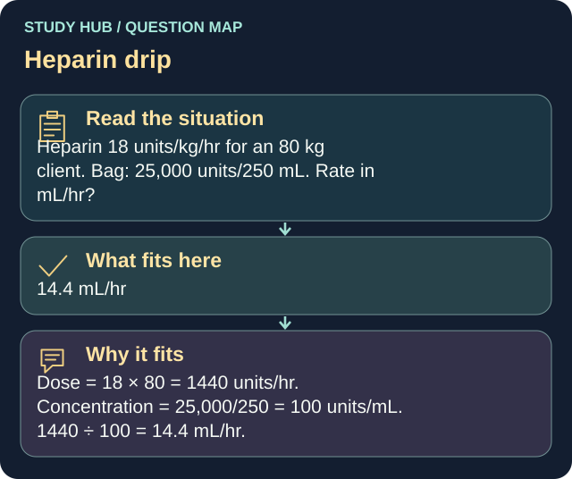

Heparin 18 units/kg/hr for an 80 kg client. Bag: 25,000 units/250 mL. Rate in mL/hr?
Answer
14.4 mL/hr
Reasoning
Dose = 18 × 80 = 1440 units/hr.
Clinical detail
Concentration = 25,000/250 = 100 units/mL. 1440 ÷ 100 = 14.4 mL/hr.
Why the other answers do not fit
- 18 mL/hr
Dose = 18 × 80 = 1440 units/hr.
- 25 mL/hr
Concentration = 25,000/250 = 100 units/mL.
- 144 mL/hr
1440 ÷ 100 = 14.4 mL/hr.
